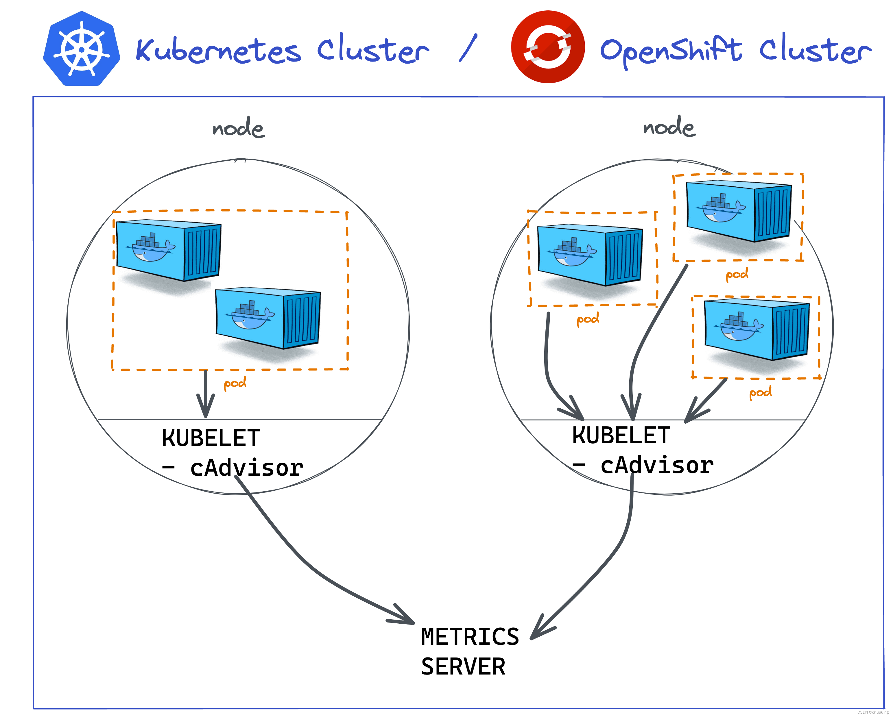

4.容器状态监测
1. Pod的生命周期¶
被用来形容Pod的状态的有Pod Status和Pod Condition：
Pod Status¶
Pod Status告诉我们当前的Pod在生命周期的哪一个阶段：
| Pod Status | 解释 |
|---|---|
Pending |
Pod刚刚建成， k8s的Scheduler 正在考虑把Pod放在哪一个Node上。如果Scheduler没有办法决定把Pod放哪里那么就会一直处于Pending状态可用 k describe pod/xxx 查看原因（比如是资源不足导致的） |
ContainerCreating |
这是Pod已经被Scheduler顺利分配到Node中了。接下来会下载镜像并创建容器 |
Waiting |
Pod被排到了某个Node上，但出于某种原因，Pod没有办法跑。原因多种多样，比如镜像没有办法下载等 |
Running |
容器顺利地创建好了，App在跑了 |
Pod Condition¶
总而言之，Pod Status 提供有关 Pod 整体状态的信息，而 Pod Condition 提供有关 Pod 及其 Container 特定方面的健康和状态的更详细信息。k8s提供了四个Conditions，可以用k describe pod/xxx查看Condition属性：
| Pod Status | 解释 |
|---|---|
PodScheduled |
Pod被Scheduler顺利分配到Node中 |
Initialized |
所有 InitContainer 都成功执行完毕 |
ContainersReady |
Pod上所有容器都运行正常 |
Ready |
Pod上所有容器可以通过Service被用户访问到 --> 这个属性也能在k get pods中的表格中看到，例子如下： |
NAME READY STATUS RESTARTS AGE
elephant 0/1 OOMKilled 3 (33s ago) 54s
monkey 1/1 READY 3 (33s ago) 54s
READY列代表：Pod中READY的Container的数量 / Pod中Container的总数，比如1/1
2. Readiness和Liveness监测¶
Probe的三种写法¶
Pod Condition中的Ready不能保证Container中的App已经可以接受用户访问了。比如Jenkins服务器刚刚开始跑的时候需要大改10-15秒时间，所以在这10-15秒中内。Pod会告诉我们Condition是Ready了，但其实App本身并没有起来。我们给Container添加 Probes，用 Probes 来测试App是否成功运行。Probes有三种写法：
- HTTP测试 （如果App是一个API server）
httpGet: path: /api/ready port: 8080 - TCP socket测试（如果App是个数据库）
tcpSocket: port: 3306 - 自定义的命令脚本
exec: command: - cat - /app/is_ready
Probe的配置
initialDelaySeconds: 10：第一次用Probe之前先等10秒（单位：Seconds）periodSeconds: 5：每5秒用一次Probe（单位：Seconds）failureThreshold: 8：最多尝试8次，如果第八次还是失败，那就停止尝试并设Ready为FALSE
Probe的使用¶
ReadinessProbe¶
ReadinessProbe给Pod Condition的Ready加了一个门槛：只有当ReadinessProbe中的测试得到正确结果后才能给Pod一个Ready的Condition。举例：
apiVersion: v1
kind: Pod
metadata:
name: simple-webapp
labels:
app: simple-webapp
spec:
containers:
- name: simple-webapp
image: simple-webapp
ports:
- containerPort: 8080
readinessProbe: # 预备测试
initialDelaySeconds: 10 # 更多复杂设置
periodSeconds: 5
failureThreshold: 8
httpGet: # httpGet测试
path: /api/ready
port: 8080
Ready的容器是正常运行的。保证了软件更新时用户总是能成功访问到我们的软件。没有Ready之前，所有的traffic都会被导到旧的Pod上去，等新的Pod确定Ready了之后，才会对它进行使用。
LivenessProbe¶
Docker VS Kubernetes
当我们用Docker创建一个Container时，如果一个Container突然出问题，其中的App无法被使用了，那需要开发者手动删除出问题的Container，再重新建一个。而Kubernetes会自动尝试删除旧的Container，建一个新的
有时会我们会遇到Container本身没有问题，但是Container中的App因为某个bug而出错的情况（比如，python代码中某个依赖包无法找到）。这种情况下Pod没有办法监测到内部App的问题，我们就需要用到LivenessProbe ，它可以定期测试容器内的应用程序是否真的健康。如果测试失败，则该Container被认为不健康，会被销毁并重建。举例：
apiVersion: v1
kind: Pod
metadata:
name: simple-webapp
labels:
app: simple-webapp
spec:
containers:
- name: simple-webapp
image: simple-webapp
ports:
- containerPort: 8080
livenessProbe: # livenessProbe
httpGet:
path: /api/ready
port: 8080
3. 容器日志（Logging）¶
Docker中，我们可以用 非分离 的模式创建容器xxx：
docker run [ImageName] --name [ContainerName]
d指detached，即”分离“）：
docker run -d [ImageName] --name [ContainerName]
-f表示follow打印实时日志：
docker logs -f [ContainerName]
同样的，在k8s中，我们也可打印实时日志:
kubectl logs -f [PodName] # ⚠️ 在[PodName]前面不加 `pod`
当一个Pod中包含 多个 Container时，我们需要写明打印哪一个Container的日志：-c代表container
kubectl logs -f [PodName] -c [ContainerName]
4. 监测和Debug¶
根据应用场景，我们可能会想要监测Node层面和Pod层面的指标：
Node层面：- 集群上
Node的总数 - 健康的
Node数量 - CPU消耗
- 内存消耗
- 磁盘利用率（disk utilization）
- 集群上
Pod层面：Pod数量- 每个
Pod的CPU，内存消耗
k8s没有提供自带的监测工具，但是有很多开源的第三方服务，比如MetricsServer，Prometheus， Elastic Stack，DataDog，Dynatrace等。在CKAD的考试中，我们只需了解如何使用MetricsServer即可，其他的工具会在CKA中讲到。
MetricsServer¶
MetricsServer的前身是Heapster（已弃用）。每个k8s集群有一个MetricsServer。MetricsServer收集Node和Pod的日志，并保存到 内存 中（不在磁盘上！），所以没有办法查看历史日志。
日志的生成¶
每个Node上都有一个kubelet代理，负责接收Master的指令，并且管理该Node上的Pod。该代理拥有一个名为cAdvisor（container advisor）的子组件，专门负责收集Pod的日志。

MetricsServer的安装¶
使用minikube安装：
minikube addons enable metrics-server
git clone https://github.com:kubernetes-sigs/metrics-server.git # 从git下载Metric-Server的YAML文件
cd metrics-server # 会生成一堆MetricsServer所需的资源：Pod，Service和Roles
kubectl create -f .
kubectl top node # 等待deploy完成后，我们可以查看Node或Pod的日志
kubectl top pod
5. 常见k8s错误¶
| 错误码 | 解释 |
|---|---|
OOMKilled |
当容器内存不足并且内核被迫终止进程时，会发生此错误。 OOM（Out Of Memory/内存不足）是 Linux 内核的一项功能，可以终止进程以释放内存。 |
ImagePullBackOff |
当 Kubernetes 无法从指定的 registry 中拉取容器镜像时会出现此错误。 这可能是由于多种原因造成的，例如登录信息不正确、网络问题或图像名称错误等。 |
CrashLoopBackOff |
当容器不断崩溃且 Kubernetes 无法成功重启时，会出现此错误。 这可能是由于配置不正确、资源不足或应用程序代码错误等各种原因造成的。 |
ErrImagePull |
当 Kubernetes 由于身份验证问题无法从指定的注册表中拉取容器镜像时，会出现此错误。 |
InsufficientCPU/InsufficientMemory |
当 Pod 或Container请求的 CPU 或内存多于节点上可用的内存时，会发生这些错误。 这可能是由于配置不正确或资源不足造成的。 |
NodeNotReady |
当节点由于网络问题、资源不足或节点维护等各种原因尚未准备好接受 Pod 时，会出现此错误。 |
InvalidImageName |
当容器镜像名称不正确或无效时会出现此错误。 |
NotFound |
当 Kubernetes 无法找到指定的资源（如 pod、服务或部署）时，会出现此错误。 |
Forbidden |
当用户没有访问或修改资源所需的权限时会发生此错误。 |
Timeout |
当进程完成时间过长，并超过配置的超时期限时，会发生此错误。 这可能是由于各种原因造成的，例如网络速度慢或资源不足。 |
>>> 本章kubectl命令整理¶
生命周期
k describe pod/xxx和k get pod/xxx都可查看Pod状态
docker
docker run [ImageName] --name [ContainerName]
docker run -d [ImageName]] --name [ContainerName] detached 模式
docker logs -f [ContainerName] 打印日志
k8s日志
k logs -f [PodName]
k logs -f [PodName] -c [ContainerName]
MetricsServer安装
用minikube安装：minikube addons enable metrics-server
其他环境安装（直接下源码）：
git clone https://github.com:kubernetes-sigs/metrics-server.git
cd metrics-server
kubectl create -f .
kubectl top node
kubectl top pod